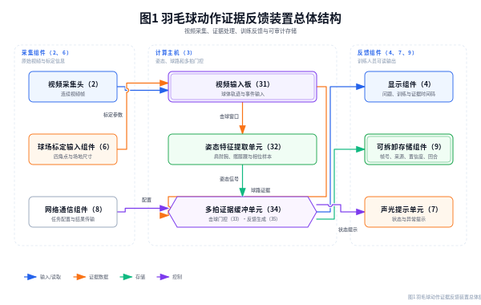
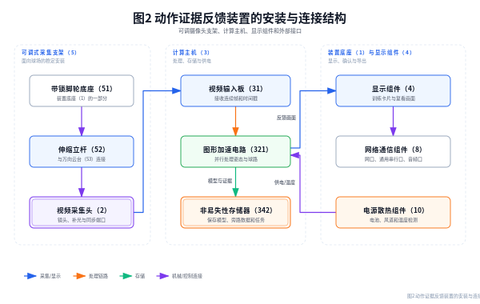
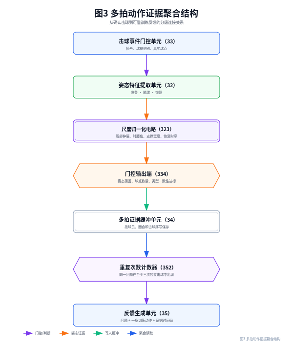
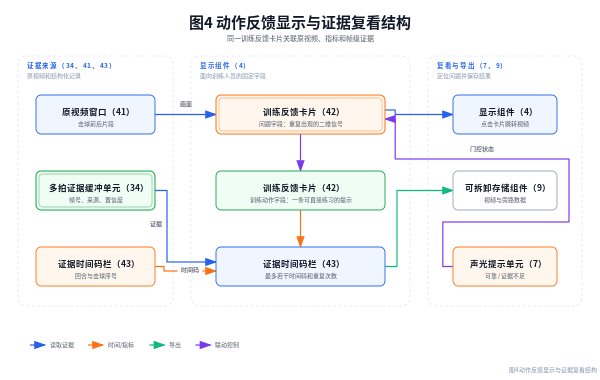

| 项目 | 内容 |
|---|---|
| 实用新型名称 | 一种基于多拍动作证据聚合的羽毛球训练反馈装置 |
| 申请人 | 【待填写】 |
| 设计人/发明人 | 【待填写】 |
| 申请人地址 | 【待填写】 |
| 联系人及联系方式 | 【待填写】 |
| 代理机构及代理师 | 【待填写】 |
| 申请日/优先权日 | 【待填写】 |
本实用新型涉及体育运动分析设备技术领域，公开一种基于多拍动作证据聚合的羽毛球训练反馈装置，包括可调式采集支架、视频采集头、计算主机、触控显示组件、证据存储单元、声光提示单元和任务配置输入组件；计算主机包括视频输入板、姿态特征提取单元、击球事件门控单元、多拍证据缓冲单元及反馈生成单元，视频采集头、任务配置输入组件、触控显示组件、证据存储单元和声光提示单元分别与计算主机电连接。视频采集头获取包含球场和运动员的连续视频，计算主机以确认击球为时间锚点提取准备、触球和恢复阶段的二维姿态信号，将真实球点、击球方和姿态覆盖率写入证据缓冲，并在同一动作问题于至少三次独立击球中重复时输出固定格式的训练反馈。该装置将原视频、帧级证据和训练提示关联显示，能够减少单帧误判造成的无效建议，便于训练人员复看和追溯。
摘要附图：图1。
1. 一种基于多拍动作证据聚合的羽毛球训练反馈装置，包括装置底座（1）、视频采集头（2）、计算主机（3）和显示组件（4），其特征在于：
所述视频采集头（2）通过可调式采集支架（5）安装在装置底座（1）上，所述计算主机（3）安装于装置底座（1）上并与视频采集头（2）电连接，所述显示组件（4）与计算主机（3）电连接；
所述计算主机（3）包括视频输入板（31）、姿态特征提取单元（32）、击球事件门控单元（33）、多拍证据缓冲单元（34）和反馈生成单元（35），视频输入板（31）、姿态特征提取单元（32）、击球事件门控单元（33）、多拍证据缓冲单元（34）和反馈生成单元（35）依次电连接，多拍证据缓冲单元（34）分别与视频输入板（31）和显示组件（4）电连接；
所述视频采集头（2）用于采集球场视频，所述姿态特征提取单元（32）用于输出运动员二维关键点，所述击球事件门控单元（33）用于接收球体轨迹和二维关键点并确认击球事件，所述多拍证据缓冲单元（34）用于保存不同击球事件的帧号、球员侧别、真实球点、姿态覆盖率和动作问题信号，所述反馈生成单元（35）用于在同一动作问题达到预设重复次数后向显示组件（4）输出包含问题字段、训练动作字段和证据时间码字段的训练反馈。
2. 根据权利要求1所述的装置，其特征在于，所述可调式采集支架（5）包括带锁脚轮底座（51）、伸缩立杆（52）和万向云台（53），伸缩立杆（52）的下端与带锁脚轮底座（51）固定连接，伸缩立杆（52）的上端通过万向云台（53）与视频采集头（2）连接。
3. 根据权利要求1所述的装置，其特征在于，所述视频采集头（2）包括镜头组件（21）、补光组件（22）、时间戳同步端口（23）和防护罩（24），补光组件（22）设置在镜头组件（21）的周向，时间戳同步端口（23）与计算主机（3）的同步接口连接。
4. 根据权利要求1所述的装置，其特征在于，还包括球场标定输入组件（6），球场标定输入组件（6）包括触控标定界面（61）和标定参数存储器（62），触控标定界面（61）设置在显示组件（4）上，标定参数存储器（62）与视频输入板（31）电连接，用于保存球场四角点和球场尺寸参数。
5. 根据权利要求1所述的装置，其特征在于，所述多拍证据缓冲单元（34）包括易失性缓存（341）、非易失性存储器（342）和写入控制器（343），写入控制器（343）分别与易失性缓存（341）和非易失性存储器（342）电连接，写入控制器（343）按照球员标识、回合标识和回合内击球序号对证据记录去重。
6. 根据权利要求1所述的装置，其特征在于，所述姿态特征提取单元（32）包括图形加速电路（321）、关键点置信度筛选电路（322）和尺度归一化电路（323），图形加速电路（321）与关键点置信度筛选电路（322）电连接，关键点置信度筛选电路（322）与尺度归一化电路（323）电连接；尺度归一化电路（323）用于根据肩部中点与髋部中点之间的距离计算躯干尺度，并输出腕部伸展、肘角、膝角和双踝间距与肩宽之比中的至少两项信号。
7. 根据权利要求1所述的装置，其特征在于，所述击球事件门控单元（33）包括真实球点输入端（331）、姿态接触输入端（332）、侧别判定电路（333）和门控输出端（334），真实球点输入端（331）和姿态接触输入端（332）分别与侧别判定电路（333）电连接，侧别判定电路（333）与门控输出端（334）电连接；门控输出端（334）仅向多拍证据缓冲单元（34）输出同时具有确认事件、可靠侧别和真实球点的击球记录。
8. 根据权利要求1所述的装置，其特征在于，所述反馈生成单元（35）包括动作组分类电路（351）、重复次数计数器（352）和固定模板存储器（353），动作组分类电路（351）与重复次数计数器（352）电连接，重复次数计数器（352）与固定模板存储器（353）电连接；固定模板存储器（353）内存储准备支撑、前场支撑、上手伸展、后场支撑和击球恢复中的至少一种问题—训练动作对应关系。
9. 根据权利要求1所述的装置，其特征在于，所述显示组件（4）为带触控层的液晶显示屏或有机发光显示屏，包括原视频窗口（41）、训练反馈卡片（42）和证据时间码栏（43），训练反馈卡片（42）与原视频窗口（41）通过时间码联动，触控训练反馈卡片（42）能够跳转至相应击球前后的视频片段。
10. 根据权利要求1所述的装置，其特征在于，还包括声光提示单元（7）、网络通信组件（8）、可拆卸存储组件（9）和电源散热组件（10）；声光提示单元（7）与反馈生成单元（35）电连接，网络通信组件（8）和可拆卸存储组件（9）分别与多拍证据缓冲单元（34）电连接，电源散热组件（10）设置在计算主机（3）的壳体内并与视频输入板（31）和图形加速电路（321）电连接。
一种基于多拍动作证据聚合的羽毛球训练反馈装置
[0001] 本实用新型涉及体育运动分析设备、视频图像处理设备和训练反馈终端技术领域，尤其涉及一种将单目视频、二维人体姿态、羽毛球轨迹和多拍重复性证据关联显示的羽毛球训练反馈装置。
[0002] 现有羽毛球训练通常依靠教练现场观察或训练人员反复观看视频。普通摄像设备能够记录动作，但难以在击球时间点同时标出运动员侧别、球体位置、姿态阶段和前后多拍的重复性问题。逐帧评分容易受关键点抖动、人体遮挡和球体漏检影响，单次异常也可能被误认为稳定技术问题。
[0003] 现有部分视频分析终端将检测到的动作直接换算成分数或文字提示，未将真实球点、确认击球事件和由交替关系推断的球员侧别分开保存；当关键点不足或击球事件不可靠时，仍可能生成无法复核的训练建议。另一方面，训练人员往往需要在原视频、指标面板和建议文字之间来回切换，无法快速定位证据帧。
[0004] 因此，需要一种具有稳定安装、同步采集、证据存储和联动显示结构的训练反馈装置，使动作问题必须经过单拍证据门控并在多次独立击球中重复后才显示，同时保留原视频和帧级依据。
[0005] 本实用新型的目的在于提供一种基于多拍动作证据聚合的羽毛球训练反馈装置，以解决现有终端单帧误报、训练提示不能追溯、采集设备位置不稳定以及建议与原视频脱节的问题。
[0006] 为实现上述目的，本实用新型采用如权利要求1至10所述的结构。装置底座（1）提供可移动支撑，视频采集头（2）通过可调式采集支架（5）朝向球场固定；计算主机（3）接收视频帧、球场标定参数和任务配置，显示组件（4）用于操作和输出结果。
[0007] 视频输入板（31）接收连续视频帧和时间戳。姿态特征提取单元（32）对运动员关键点进行置信度筛选，以肩髋距离作为躯干尺度，输出腕部伸展、肘角、膝角、支撑宽度和恢复时序等二维信号。所述信号按击球事件前后的时间窗分为准备阶段、触球阶段和恢复阶段。
[0008] 击球事件门控单元（33）将球体检测得到的真实球点与姿态接触区域进行关联，排除只由回合交替关系补出的侧别记录；只有确认事件、可靠侧别、真实球点和有效姿态样本同时满足预设门槛时，才向多拍证据缓冲单元（34）写入该击球的动作问题候选。
[0009] 多拍证据缓冲单元（34）按球员、动作组、回合和击球序号保存证据。动作组可包括准备衔接、前场球、上手球、后场球和击球恢复。相同物理击球只保留一条记录，避免一段视频中的重复调用造成计数膨胀。
[0010] 反馈生成单元（35）读取多拍证据，对同一球员、同一动作组中的相同二维可见问题进行重复次数统计。当重复次数达到预设值，优选为至少三次相互独立的可靠击球时，从固定模板存储器（353）读取一条问题描述和一条训练动作，向显示组件（4）输出，并附带不超过预设数量的证据时间码。
[0011] 显示组件（4）将训练反馈卡片（42）与原视频窗口（41）联动，训练人员触控卡片即可跳转到相应帧；证据存储单元中的原始字段、处理后字段、来源和置信度不通过自由文本覆盖，从而便于复看和审计。
[0012] 与现有技术相比，本实用新型至少具有以下有益效果：
[0013] 图1为本实用新型总体结构示意图；
[0014] 图2为本实用新型安装与连接结构示意图；
[0015] 图3为本实用新型多拍动作证据聚合结构示意图；
[0016] 图4为本实用新型动作反馈显示与证据复看结构示意图。
[0017] 附图中各部件标记如下：1‑装置底座，2‑视频采集头，3‑计算主机，4‑显示组件，5‑可调式采集支架，6‑球场标定输入组件，7‑声光提示单元，8‑网络通信组件，9‑可拆卸存储组件，10‑电源散热组件，21‑镜头组件，22‑补光组件，23‑时间戳同步端口，24‑防护罩，31‑视频输入板，32‑姿态特征提取单元，33‑击球事件门控单元，34‑多拍证据缓冲单元，35‑反馈生成单元，41‑原视频窗口，42‑训练反馈卡片，43‑证据时间码栏，51‑带锁脚轮底座，52‑伸缩立杆，53‑万向云台，61‑触控标定界面，62‑标定参数存储器，321‑图形加速电路，322‑关键点置信度筛选电路，323‑尺度归一化电路，331‑真实球点输入端，332‑姿态接触输入端，333‑侧别判定电路，334‑门控输出端，341‑易失性缓存，342‑非易失性存储器，343‑写入控制器，351‑动作组分类电路，352‑重复次数计数器，353‑固定模板存储器。
| 标号 | 部件名称 | 主要出现附图 |
|---|---|---|
| 1、5、51、52、53 | 装置底座、可调式采集支架及其底座、立杆、云台 | 图1、图2 |
| 2、21、22、23、24 | 视频采集头及镜头、补光、同步端口、防护罩 | 图1、图2 |
| 3、31、32、33、34、35 | 计算主机及视频输入、姿态提取、击球门控、证据缓冲、反馈生成单元 | 图1、图3 |
| 4、41、42、43 | 显示组件、原视频窗口、训练反馈卡片、证据时间码栏 | 图1、图4 |
| 6、61、62 | 球场标定输入组件、触控标定界面、标定参数存储器 | 图1 |
| 7、8、9、10 | 声光提示、网络通信、可拆卸存储、电源散热组件 | 图1、图2、图4 |
| 321、322、323 | 图形加速、关键点筛选、尺度归一化电路 | 图2、图3 |
| 331、332、333、334 | 真实球点输入、姿态接触、侧别判定、门控输出端 | 图3 |
| 341、342、343、351、352、353 | 缓存、非易失存储、写入控制、动作组分类、重复计数、固定模板 | 图2、图3、图4 |
[0018] 下面结合附图对本实用新型作进一步说明。除非另有说明，文中所述连接包括直接连接和通过接口、线缆或总线的间接连接；部件编号仅用于区分，不限定部件的安装顺序。
[0019] 如图1和图2所示，装置底座（1）采用带锁脚轮结构，可在训练场地移动后锁定。伸缩立杆（52）采用带锁紧旋钮的多节管体，万向云台（53）设置俯仰和水平旋转调节件。视频采集头（2）安装在万向云台（53）上，防护罩（24）包覆镜头组件（21）、补光组件（22）和时间戳同步端口（23）。
[0020] 计算主机（3）设置在装置底座（1）的箱体内，箱体前侧设置显示组件（4），侧面设置网络通信组件（8）、可拆卸存储组件（9）和电源接口，箱体后侧设置散热风道。视频采集头（2）通过视频线和同步线与视频输入板（31）连接，显示组件（4）通过显示线和触控线与计算主机（3）连接。
[0021] 使用时，训练人员通过触控标定界面（61）在球场视频上选择四个角点，并在标定参数存储器（62）中保存球场尺寸。视频输入板（31）接收连续视频帧，姿态特征提取单元（32）输出两名运动员的人体框和二维关键点；对于低于置信度阈值的关键点，关键点置信度筛选电路（322）将其标记为缺失，不使用人体框中心替代缺失关节。
[0022] 击球事件门控单元（33）接收球体轨迹中的真实球点，并检查击球前后是否存在连续真实观测；姿态接触输入端（332）根据腕、肘和肩部位置确定接触邻域，侧别判定电路（333）结合球场位置、姿态接触和球体方向确定击球方。仅当事件、侧别、真实球点和姿态覆盖率达到配置门槛时，门控输出端（334）才写入击球记录。
[0023] 如图3所示，以确认击球为时间锚点，在击球前约0.50秒至击球后约0.90秒内抽取准备、触球和恢复阶段样本。尺度归一化电路（323）计算腕部相对于肩部的伸展距离与躯干尺度之比、肘角、膝角和双踝间距与肩宽之比，并将有效样本写入多拍证据缓冲单元（34）。
[0024] 多拍证据缓冲单元（34）按球员标识、动作组、回合标识和回合内击球序号去重。动作组分类电路（351）把上手伸展等可跨多个精确球种出现的问题合并到上手球动作组；重复次数计数器（352）在至少三次不同击球中检测到相同问题后，才触发固定模板存储器（353）的输出。
[0025] 如图4所示，反馈生成单元（35）向训练反馈卡片（42）写入固定字段，包括问题、训练动作、重复次数和证据时间码。训练反馈卡片（42）不显示无法由结构化证据支持的握拍、拍面、旋转、伤病或战术意图。训练人员触控证据时间码栏（43）后，显示组件（4）从原视频窗口（41）定位到对应击球片段。
[0026] 声光提示单元（7）可采用蜂鸣器、扬声器、指示灯或其组合，用于提示任务完成、证据不足、存储空间不足和设备温度过高。网络通信组件（8）可采用有线网络或无线网络，用于在授权终端间传送结构化结果；可拆卸存储组件（9）用于导出视频索引和证据记录。
[0027] 本实用新型的结构不限于上述实施例。视频采集头（2）可为广角摄像头或定焦摄像头；显示组件（4）可与计算主机（3）分体设置；计算主机（3）可采用中央处理器、图形处理器、神经网络处理器或其组合；只要保持视频采集、姿态特征提取、击球事件门控、多拍证据缓存和联动反馈显示的结构关系，均属于本实用新型的保护范围。
[0028] 本装置可由现有摄像头、嵌入式计算主机、触控显示器、存储器、接口板和支架组装实现，适用于羽毛球训练馆、学校体育场馆、运动康复训练和移动教学，具有明确的工业实用性。



